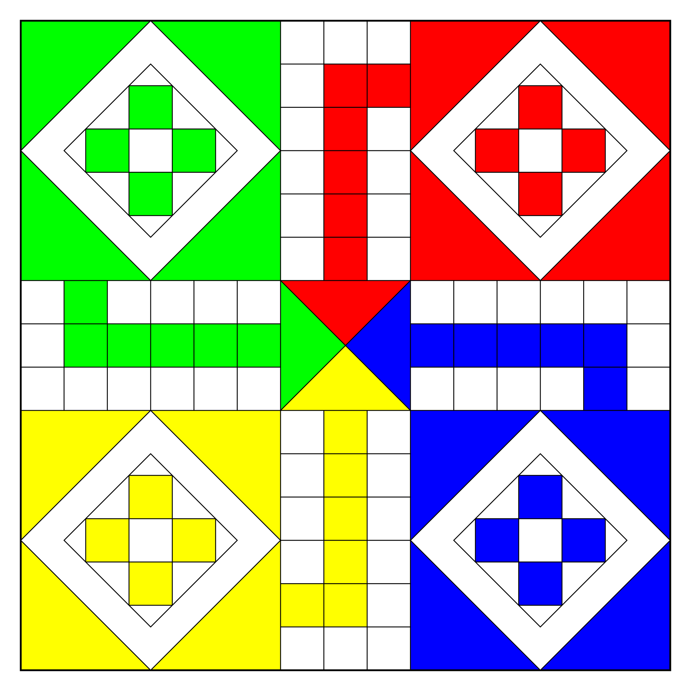
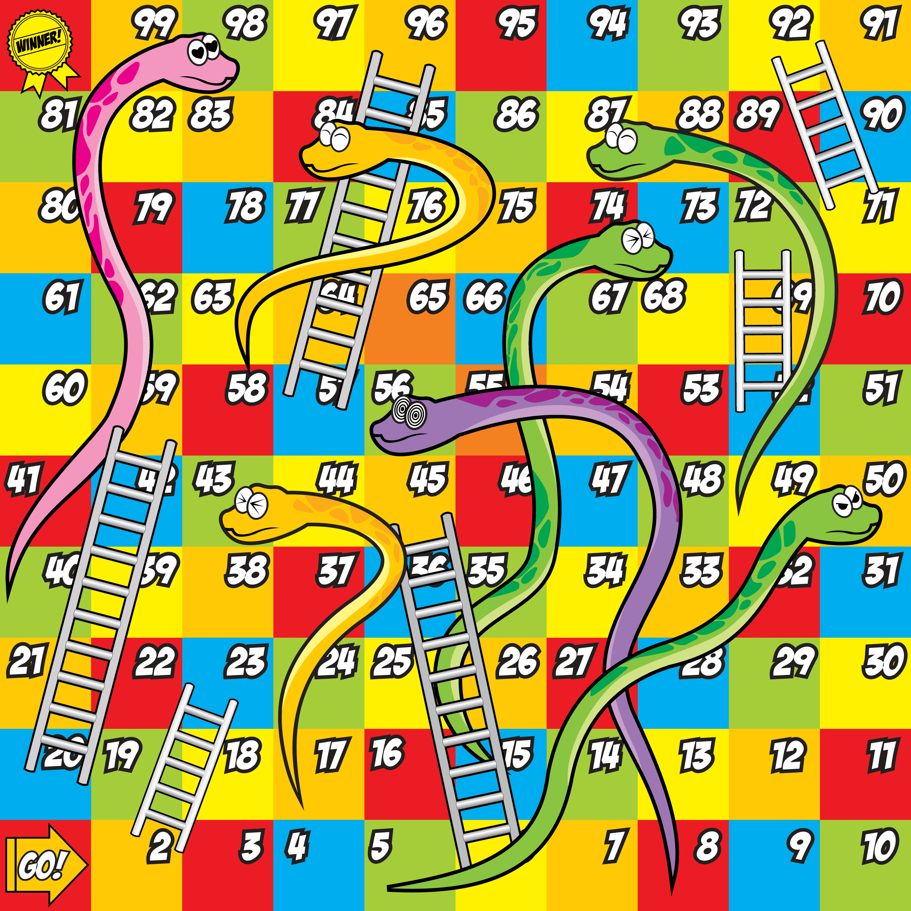

<div class="div-hight">
  <div class="center-align my-4">
    <div *ngIf="balance > 0; else noBalance">
      <mat-form-field>
        <mat-label>Bet Amount</mat-label>
        <mat-select [formControl]="amount" name="food">
          <mat-option *ngFor="let food of options" [value]="food">
            {{ food }}
          </mat-option>
        </mat-select>
        <span matTextPrefix>Rs. &nbsp;&nbsp;&nbsp;&nbsp;</span>
      </mat-form-field>
    </div>
    <ng-template #noBalance>
      <h5 class="text-danger">Not sufficient balance, Please add to start play</h5>
    </ng-template>
  </div>
  <!-- if balence less than selected value -->
  <div class="center-align my-4">
    <div *ngIf="balance < (amount.value ? +amount.value : 0)">
      <h5 class="text-danger">Please select amount upto {{ balance }} or add</h5>
    </div>
  </div>
  <!-- spinner -->
  <ngx-spinner type="ball-scale-multiple">
    <div class="text-center">
      <div class="spinner-border text-primary" role="status" style="height: 5rem; width: 5rem">
        <span class="sr-only">Loading</span>
      </div>
      <br /><br />
      <h5 class="text-success">Searching for oppenent ...</h5>
      <br />
      <button mat-raised-button color="accent">Cancel</button>
    </div>
  </ngx-spinner>

  <!-- Ludo and snake button -->
  <div class="center-align box">
    <button type="button" (click)="onSumit('ludo')" [disabled]="amount.invalid || isGameStart || balance < (amount.value ? +amount.value : 0)" mat-fab extended color="accent" class="mr-5">Start Ludo</button>
    <h5 class="text-success">Or</h5>
    <button type="button" (click)="onSumit('snake')" [disabled]="amount.invalid || isGameStart || balance < (amount.value ? +amount.value : 0)" mat-fab extended color="warn" class="ml-5">Snake Ladder</button>
  </div>
  <div class="center-align box p-4">
    
    
  </div>
</div>
